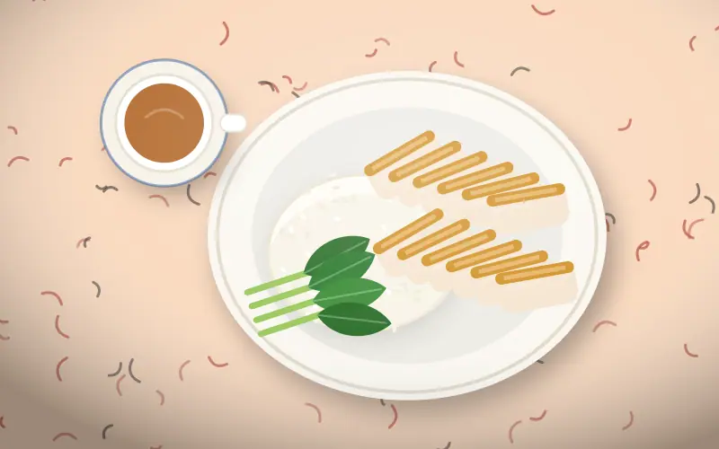
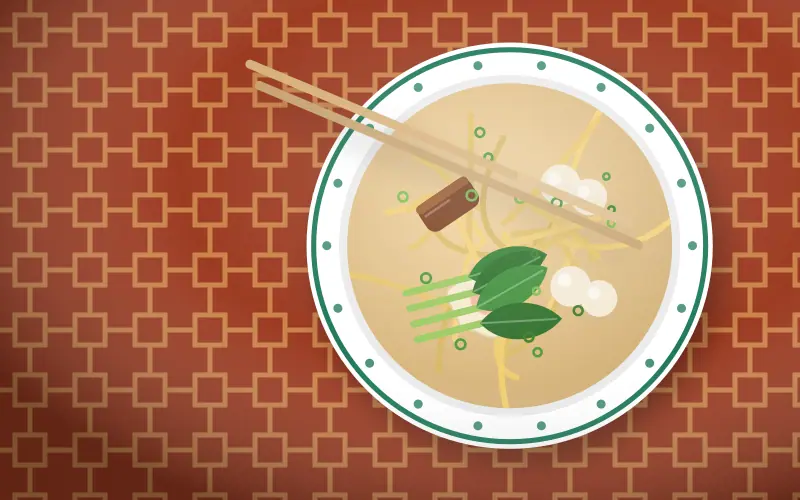
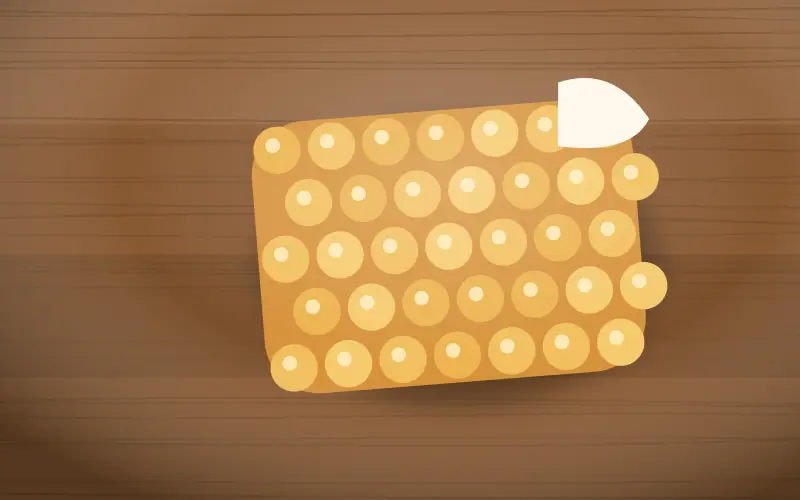
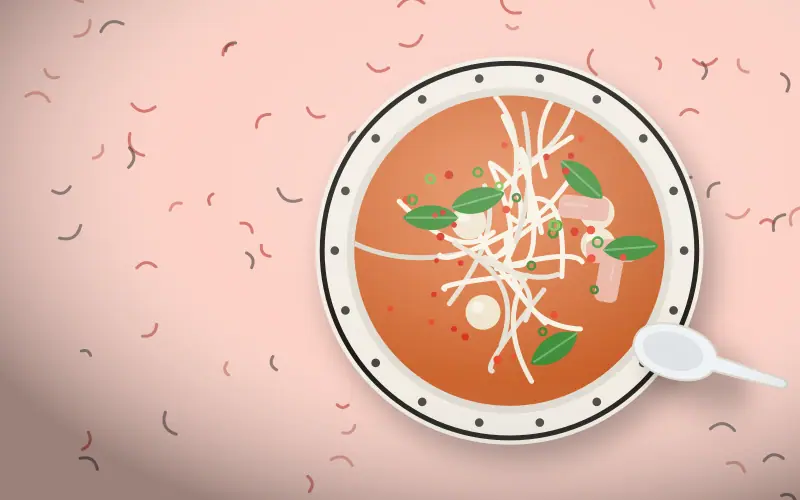
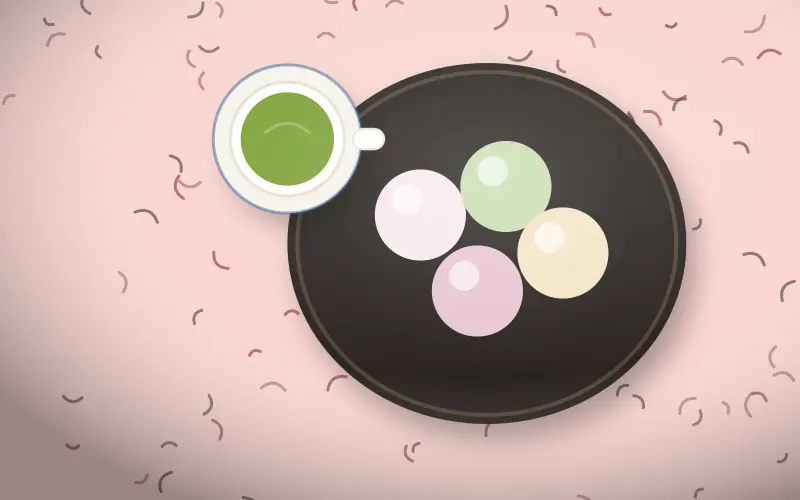

Cheap eats in Eastern 東區
13 places, from $28. Tap one for prices, hours and the nearest MTR.

Sun Kwai Heung Barbecue新桂香燒臘 · Chai Wan~$52
Sister Wah華姐清湯腩 · Tin Hau$68
Lee Keung Kee李強記 · North Point$28 Tung Po Kitchen東寶小館 · North Point$128
Tung Po Kitchen東寶小館 · North Point$128  On Lee Noodle安利魚蛋粉麵 · Shau Kei Wan~$40
On Lee Noodle安利魚蛋粉麵 · Shau Kei Wan~$40 Hung's Delicacies阿鴻小吃 · North Point~$98
Hung's Delicacies阿鴻小吃 · North Point~$98 Tim Ho Wan (North Point)添好運（北角） · North Point$72
Tim Ho Wan (North Point)添好運（北角） · North Point$72  Shau Kei Wan Cooked Food Centre筲箕灣街市熟食中心 · Shau Kei Wan~$36
Shau Kei Wan Cooked Food Centre筲箕灣街市熟食中心 · Shau Kei Wan~$36
TamJai SamGor (Quarry Bay)譚仔三哥米線（鰂魚涌） · Quarry Bay$52 Tai Hing (Tai Koo)太興（太古） · Tai Koo$72
Tai Hing (Tai Koo)太興（太古） · Tai Koo$72  Tsui Wah (North Point)翠華（北角） · North Point$78
Tsui Wah (North Point)翠華（北角） · North Point$78  Fairwood (Chai Wan)大快活（柴灣） · Chai Wan$32
Fairwood (Chai Wan)大快活（柴灣） · Chai Wan$32 
Yoshinoya (North Point)吉野家（北角） · North Point$50